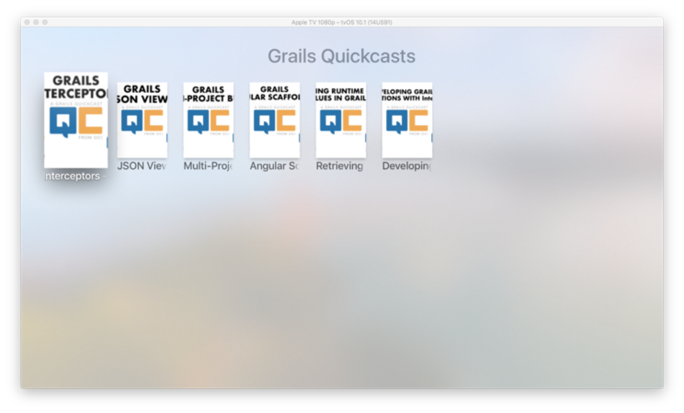

grails create-app --profile rest-api -features=hibernate5,markup-views,asset-pipeline4 Writing the TVML Grails Application
Version: 3
Table of Contents
4 Writing the TVML Grails Application
The initial Grails application, which you can find in the initial folder, was created with the command:
4.1 TVMLKit JS Utils
TVMLKit JS is a JavaScript API framework specifically designed to work with Apple TV and TVML. TVMLKit JS incorporates the basic functionality found in JavaScript along with specialized APIs designed for Apple TV. Using TVMLKit JS, you are able to load and display TVML templates, play media streams, load customized content, and control the flow of your app. For more information, see TVJS Framework Reference.
Add a JavaScript file to our project. It defines a series of methods nearly identical as those described in the section Playing Media of TVML Programming Guide.
These methods allow to push pages into the navigation stack, fetch documents and play media.
/grails-app/assets/javascripts/tvmlkit.js
link:../snippets/grails-app/assets/javascripts/tvmlkit.js[role=include]4.2 TV Boot Url
This guide uses Asset Pipeline Plugin
The Asset-Pipeline is a plugin used for managing and processing static assets in JVM applications primarily via Gradle (however not mandatory). Asset-Pipeline functions include processing and minification of both CSS and JavaScript files
Create a javascript file which will be the entry to our TVML Grails App:
/grails-app/assets/javascripts/application.js
link:../snippets/grails-app/assets/javascripts/application.js[role=include]Please note, how the line displayed in the next Listing includes the TVMLKit JS file discussed in the previous section.
/grails-app/assets/javascripts/application.js
link:../snippets/grails-app/assets/javascripts/application.js[role=include]The initial TVML document is the XML rendered at http://localhost:8080/quickcast.
The next line designates the initial document:
/grails-app/assets/javascripts/application.js
link:../snippets/grails-app/assets/javascripts/application.js[role=include]4.3 Domain class
Create a persistent entity to store Quickcasts. Most common way to handle persistence in Grails is the use of Grails Domain Classes:
./grailsw create-domain-class QuickcastThe Quickcast domain class is our data model. We define different properties to store the Quickcast characteristics.
/grails-app/domain/com/ociweb/quickcasts/Quickcast.groovy
link:../snippets/grails-app/domain/com/ociweb/quickcasts/Quickcast.groovy[role=include]With a Unit Test, we test the property body is optional.
/src/test/groovy/com/ociweb/quickcasts/QuickcastSpec.groovy
link:../snippets/src/test/groovy/com/ociweb/quickcasts/QuickcastSpec.groovy[role=include]We then load some test data in BootStrap.groovy.
/grails-app/init/com/ociweb/quickcasts/BootStrap.groovy
link:../snippets/grails-app/init/com/ociweb/quickcasts/BootStrap.groovy[role=include]4.4 Stack Template
We show first an Apple TVML Stack Template with the Grails Quickcasts:

Create a Grails Controller to handle requests
./grailsw create-controller com.ociweb.quickcasts.QuickcastA request to http://localhost:8080/quickcast executes the index action of QuickcastController
/grails-app/controllers/com/ociweb/quickcasts/QuickcastController.groovy
link:../snippets/grails-app/controllers/com/ociweb/quickcasts/QuickcastController.groovy[role=include]The QuickcastController index method renders every Quickcast using the next Markup View
/grails-app/views/quickcast/index.gml
link:../snippets/grails-app/views/quickcast/index.gml[role=include]Markup Views are written in Groovy, end with the file extension gml and reside in the grails-app/views directory.
Write a functional test to test the XML generated is what we expect.
/src/integration-test/groovy/com/ociweb/quickcasts/QuickcastControllerIndexSpec.groovy
link:../snippets/src/integration-test/groovy/com/ociweb/quickcasts/QuickcastControllerIndexSpec.groovy[role=include]To facilitate XML comparison in the tests, we include XMLUnit as a dependency.
/build.gradle
link:../snippets/build.gradle[role=include]4.5 Product Template
When we select the first Quickcast, the document residing in http://localhost:8080/quickast/1 is pushed into the navigation stack
To render a Quickcast, we use the Apple TVML Product Template.

A request to http://localhost:8080/quickcast/1 executes the show action of QuickcastController.
/grails-app/controllers/com/ociweb/quickcasts/QuickcastController.groovy
link:../snippets/grails-app/controllers/com/ociweb/quickcasts/QuickcastController.groovy[role=include]The model passed to our view is the requested Quickcast and a series of related videos.
In application.yml, we configure how many related Quickcasts we want to show.
/grails-app/conf/application.yml
link:../snippets/grails-app/conf/application.yml[role=include]Fetching of related quickcasts is encapsulated in a Service.
/grails-app/services/com/ociweb/quickcasts/RelatedQuickcastsService.groovy
link:../snippets/grails-app/services/com/ociweb/quickcasts/RelatedQuickcastsService.groovy[role=include]The QuickcastController index method renders a Quickcast using the next Markup View
/grails-app/views/quickcast/show.gml
link:../snippets/grails-app/views/quickcast/show.gml[role=include]With a functional test, we test the XML rendered is what we expected.
/src/integration-test/groovy/com/ociweb/quickcasts/QuickcastControllerShowSpec.groovy
link:../snippets/src/integration-test/groovy/com/ociweb/quickcasts/QuickcastControllerShowSpec.groovy[role=include]4.6 Internationalization
Internationalization is a first-class citizen in Grails.
To render such a snippet:
link:../snippets/src/integration-test/groovy/com/ociweb/quickcasts/QuickcastControllerShowSpec.groovy[role=include]We use this code:
link:../snippets/grails-app/views/quickcast/show.gml[role=include]Define message codes and default values in messages.properties
/grails-app/i18n/messages.properties
link:../snippets/grails-app/i18n/messages.properties[role=include]Including a Spanish localization is easy. Include the localized message codes in
messages_es.properties.
/grails-app/i18n/messages_es.properties
link:../snippets/grails-app/i18n/messages_es.properties[role=include]